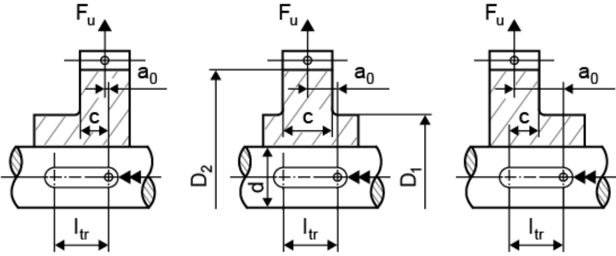

|
|
|


Niemann 几何数据
这些几何数据仅用于计算 按 Niemann 规定的强度：
- 轴孔直径 dΙ
- 轮毂大外径 D
要执行按 Niemann 定义的计算，您需要输入更多值。根据载荷的位置，您可以输入值 a0。如果存在带肩的轮毂，还必须输入轮毂小外径 D 和中心部分宽度 c（连同 D）。下图显示了如何定义这些值：

图 38.2：按 Niemann 的参数定义
Niemann geometry data
This is geometry data that is only used to calculate strength as specified by Niemann:
- Diameter of shaft bore dΙ
- Large outside diameter of hub D
You will need to enter more values to perform the calculation as defined by Niemann. Depending on the position of the load, you can enter the value a0. If a shouldered hub is present, you must also enter the small hub external diameter D and the width of the center part c (with D). The following diagram shows how to define these values:
Figure 38.2: Parameter definition acc. to Niemann